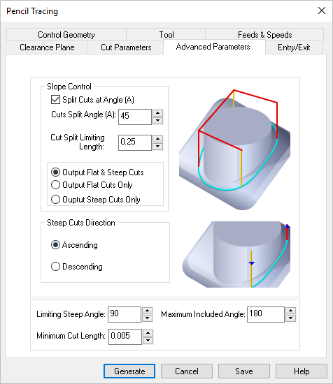
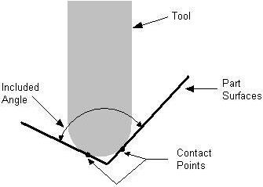

The following Cut Parameters tab allows you to define the cut parameters for the current 3 Axis Pencil Tracing operation. You can set Global Parameters, Cut Direction and the Stepover Control via this tab of the operation dialog. The Global Parameters section allows you to set the tolerance value to be used in machining. A uniform thickness or stock that needs to be left around the part can also be specified here. Refer to each option below.
 Dialog Box: Advanced Parameters tab, Pencil Tracing, 3 Axis |
This section of the dialog is used to control the cuts based on the slope of the cuts. Split Cuts at Angle (A) If you check this then the pencil trace cuts can be controlled based on the subsequently input slope angle based parameters. If not checked then all of the computed pencil trace cuts will be output. You can then specify the following parameters. Cuts Split Angle (A) The cuts will be examined and split at this specified angle. This angle is computed with respect to the XY plane. Cut Split Limiting Length In some cases the split angle could cause small cut segments to be output. This can happen when the pencil trace cuts trajectories bounce up and down the specified cuts split angle. If the split segment is below a certain length, you might not want to split the curve at that location. This parameter controls this limiting length of the cut. Output Flat and Steep Cuts This allows the output of both the flat and steep cuts after the splitting is done at the split angle location. Output Flat Cuts Only This allows the output of the flat cuts only after splitting. Output Steep Cuts Only This allows the output of only the steep cuts after splitting.
|
You can also control the direction of the steep cuts by choosing either Ascending or Descending. In the former case all steep cuts will be ordered such that the cutter goes from low Z value to high while in the other case in the opposite direction.
|
Additionally you can chose to ignore cuts steeper than a certain angle. This is usually done to avoid cutting very steep vertical areas in the part. The default value is 90 degrees, which means all cuts will be output. You need to specify something lower than this if he wants to prevent cutting very steep areas. This angle is also computed with respect to the XY plane. |
You can also control the output of cuts based on the Included Angle. The included angle is the angle between the two tangent lines at the bi-tangency points of the pencil traces.
 Maximum Included Angle |
This allows you to ignore cuts lower than this length. This parameter allows for pruning small cuts in models that might result in too many small areas where pencil traces can be detected. |